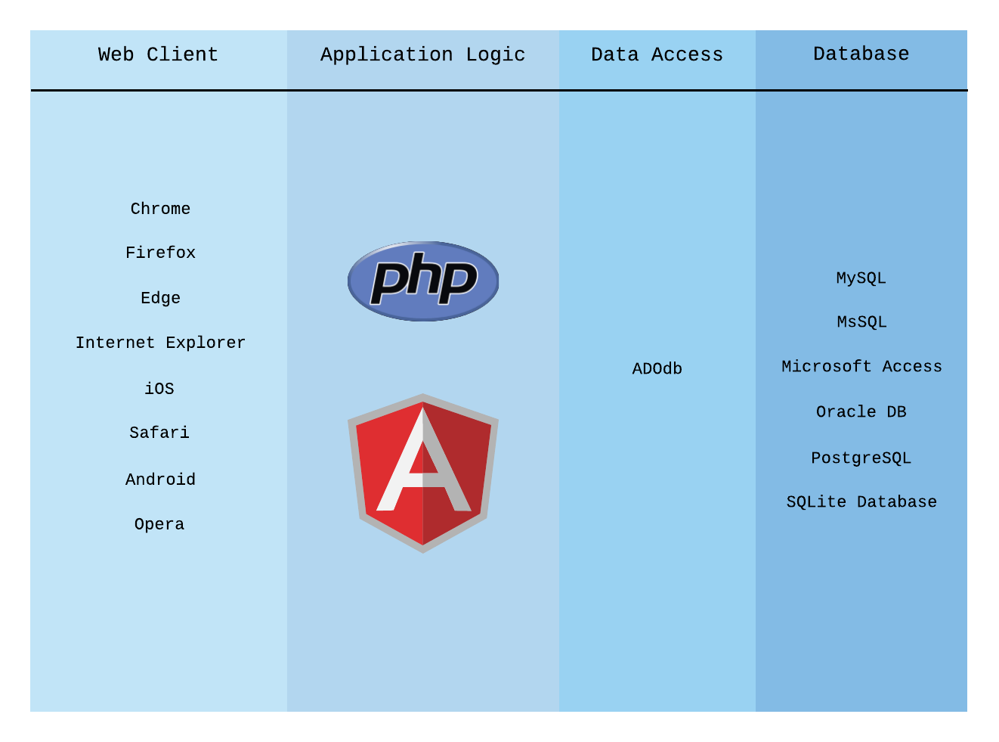
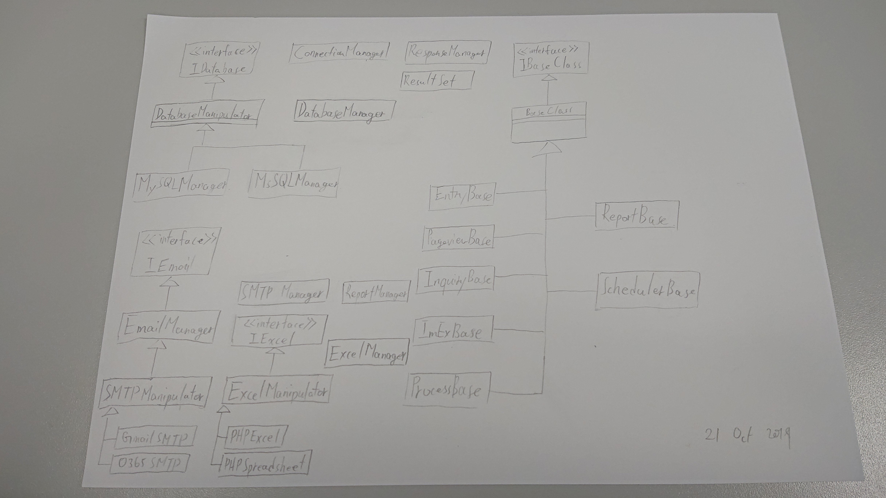

AngularJS-CRUD-PHP is an open source project developed under (HTML+CSS+JS), AngularJS and PHP, it is designed to be used for develop web-based system. With a combination of versatility and extensibility, you may use AngularJS-CRUD-PHP to develop ERP like system, information system and content management system.
Implement Your Needs
CRUD
List
Inquiry
Process
Report Engine
Template
Engine
Excel
Pdf
Cron Job
H:i:s
Y-m-d
Commands
Data Migration and archive
*.xlsx *.xls
*.cvs
Archive
Featured Design
Multi-Tier Architecture
The project applied separation of concerns design principle, its contains Four Tiers: Display Tier, Business Logic Tier, Data Access Tier, Database Tier. The tiers addresses the view, logic, data access, data storage objective.
The source code already separated in several parts, breakdown the problem into smaller tasks is the arm of troubleshooting, same on software development, it will easy to locate for adding new features or debugging on existing functions, developer take advantages of this benefit.

Core Extendibility and Flexibility
The project stick with open/closed principle in design, the system core responsible for receive request, use relative business logic to process the request, return response. That's include performing data conversion, providing correct program behaviour by request type, manipulating smtp service, generating excel file and pdf document.
The functional based components can be easy to extend and modify for future changes. User may migrate the system to the supported database with less effort. Developer can adding code instead of modifing the source if the requirements change.

AngularJS-CRUD-PHP Achievement
loading statistics info ...
0000
Modern Browser
AngularJS-CRUD-PHP is a web-based project, its develop in the web standard, any Modern Browser would successfully renders the site without additional coding efforts on browser-specific hacks, forks or workarounds.
Third-Party Library Migration
AngularJS-CRUD-PHP provide the room of area to massage the data for customization. Developer may migrate other UI framework, js tools, visualization tools, user client, data access tools. Also the developer may adept the data pattern and migrate the project to your existing system.
Limited Size with Potential Value
AngularJS-CRUD-PHP are suitable for develop information system(Human Resource Management, Release Management, Expenses Claim, Facility Management)
Tried & Tested
We've performed functional testing, so that the features work and display perfectly in famous modern browsers.
Security Perference
Set up premission on user group, functions, function roles level to manage user privilege.
Less Learning Efforts
Well documented development, training materials and explain in illustration, it provides documentation, diagrams, sample code, dummy data, use cases.
Regular Revamp
The project used some UI frameworks, worked with some of third-party resources, a regular review will performs to evaluate and upgrade the third-party resources get the new features.
With Way More on the Way!
But not done yet. Implement RESTful API, plug-ins support and more are in the future.
System Specification
Include UML, Data Flow, Data Massage with explanation. Learn How to Develop new system, How to Migrate to existing system.
Demonstration
Learn how to create a system with AngularJS-CRUD-PHP core.
Help Preserve This Project
The project developed since 2015 by Keith Poon. Support for the continued development of AngularJS-CRUD-PHP comes directly from the community.